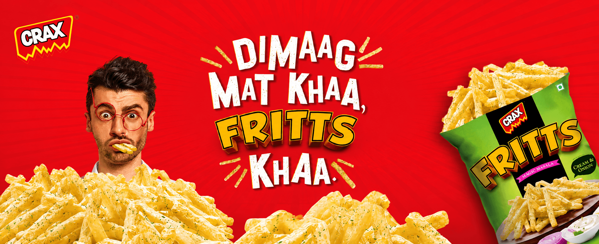
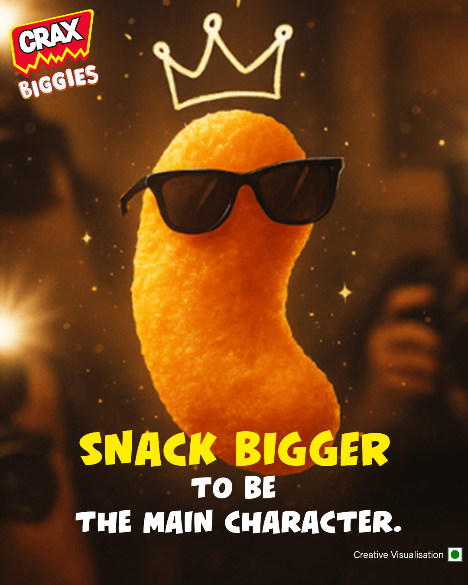
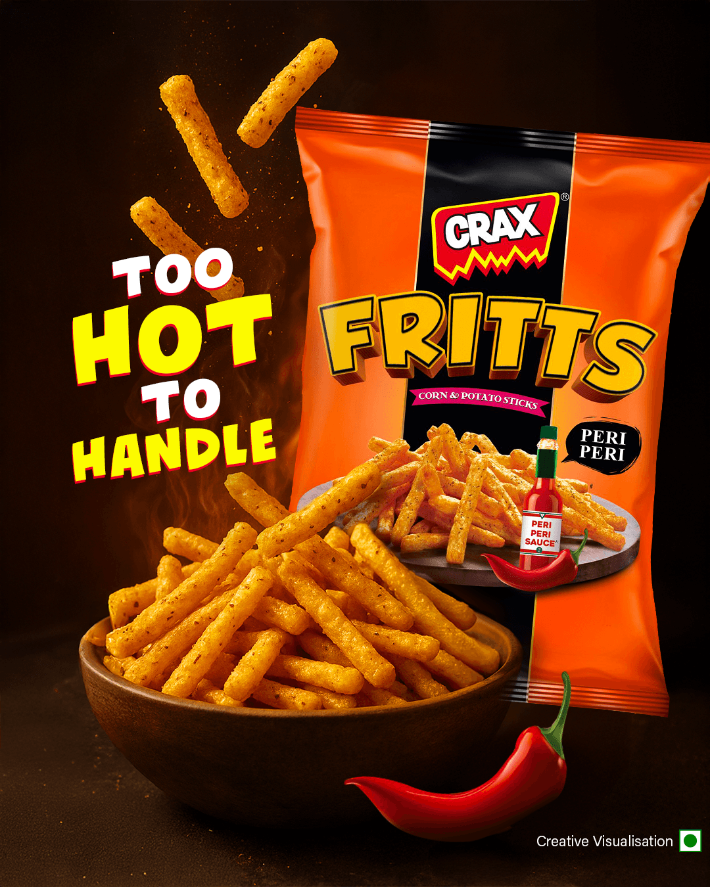
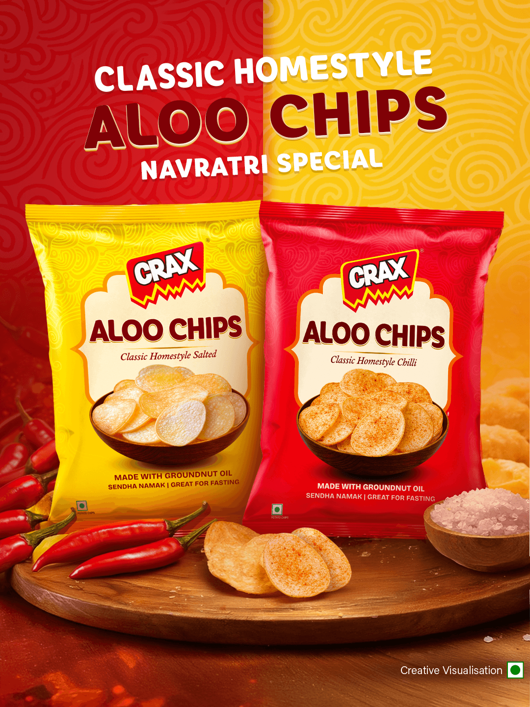
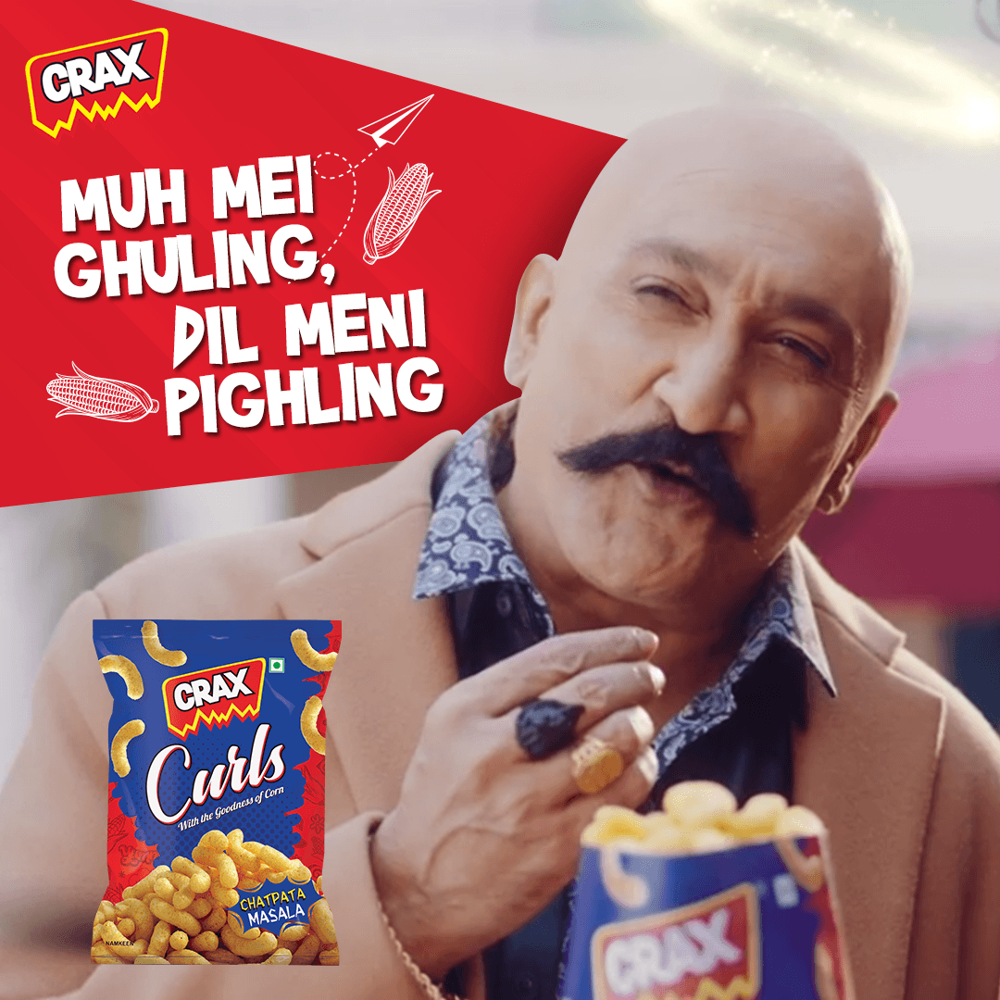
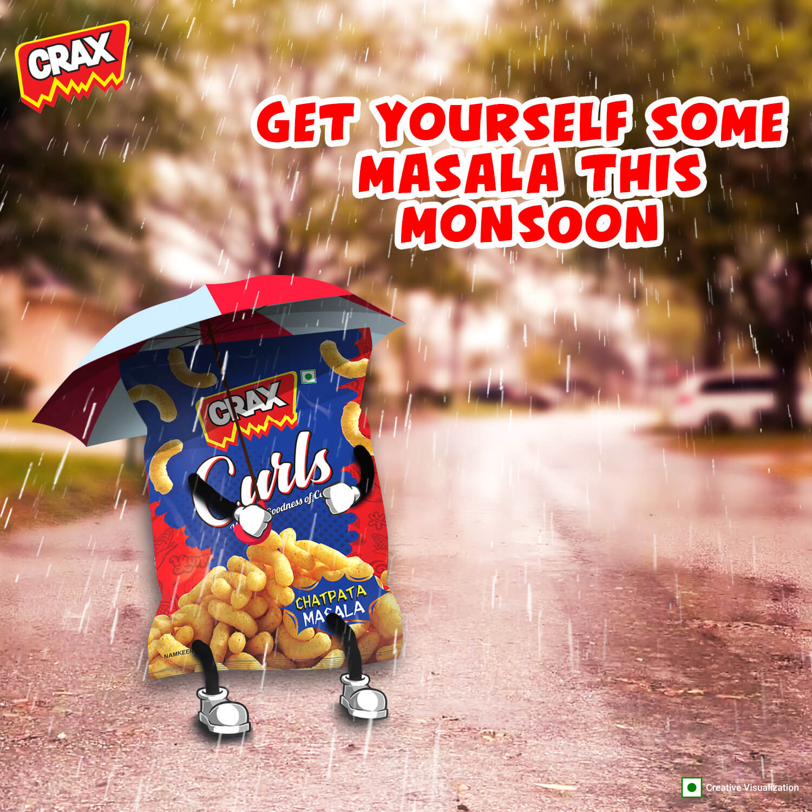
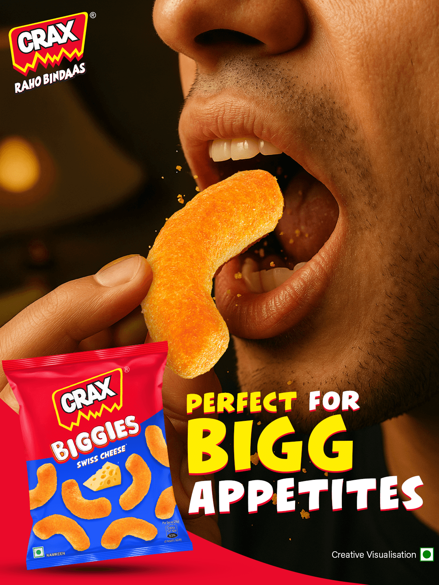

Each format, flavour and sub-brand needs its own reason to stop while still belonging unmistakably to CRAX.
← Back to workFeed the
CRAX · Always-On Social
Feed the
fun.

Project overview
A snack brand that
never sits still.
Build a social language energetic enough to match the crunch.
Across products, seasons, launches and everyday moods, the system keeps CRAX instantly recognisable through exaggerated appetite appeal, bold humour, compact copy and a red-yellow visual pulse.
- Cadence
- Always on
- Voice
- Bold + playful
- Formats
- Posts + stories
- Portfolio
- Multi-product
The live content language
Every scroll needs
a little more crunch.






The challenge
Many products.
One unmistakable attitude.
Ideas have seconds to communicate. Product, thought and payoff must land almost simultaneously.

The content engine
Built to react.
Designed to belong.
Product-first
Scale, texture and pack visibility turn every frame into appetite.
Moment-ready
Weather, weekdays and festivals create timely reasons to participate.
Character-rich
Visual jokes and playful worlds give individual products a personality.
Brand-coded
Logo, colour, type and tone maintain recognition across every execution.
The strategy
Make the product
the main character.
Lead with a single visual joke or appetite trigger, then let concise copy sharpen the payoff.
The approach creates variety without visual drift: every post can change its world while preserving the same high-energy brand behaviour.
- 01
Stop
Use scale, colour and contrast for immediate attention.
- 02
Reward
Deliver a clear joke, mood or flavour promise.
- 03
Recall
End with strong product and brand ownership.

More from the feed
Different moments.
Same appetite for fun.

The outcome
A feed with range.
A brand with one voice.
A flexible social system that can launch products, join conversations and build appetite without losing recognition.
High recognition
Strong visual codes connect very different executions.
Fast relevance
A modular system creates room for topical and seasonal ideas.
Portfolio energy
Multiple snack formats gain distinct personalities within one world.
Always fresh.Always CRAX.
More work
View all workDabur India.
Inside Tezpur.
Need a feed people remember?